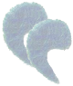

De: La Frikipedia, la enciclopedia extremadamente seria.
De: La Frikipedia, la enciclopedia extremadamente seria. De: La Frikipedia, la enciclopedia extremadamente seria.
Incendiarismo, tambien conocido como piromanía o demencia crónica.
Más allá de la filosofía y la religión, etc; es una esencia de la vida y espíritu, es el camino del fuego interior de un pirómano como lo fue el bushido para los samurais. Iniciado por el gran desperdicio y deshecho humano iluminado por su maestro del fuego en su infancia más rebelde e ígnea para seguir el carbonizado camino para ser un cabronazo pyromano y lograr la purificación del alma y probablemente una terrible muerte a manos de su propia creación.
El alma purificada del pyromano, consumida por fuego como su ultimo sacrificio por el bien del fuego y su Dios, se elevara a un paraíso de fuego fatuo eterno o terrible infienro de fuego vengativo (que más da). La llegada de otro heroe pyromano provocara jubilo y alegría entre los acérrimos y fanáticos pyromanos condenados tras la muerte a este Valhalla en llamas, celebrando y festejando entre putas, vodka, más putas y retandose en duelo con lanzallamas y cocteles molotov hasta la llegada del fin del Dios del Fuego. Cuando el Dios del Fuego exale su ultimo aliento de llamas empezará la elección de un nuevo Dios. El ejercito de pyromanos (einherjer) compartirán sus llamas como buenos hermanos nacidos por el fuego aunque más bien muertos por él provocando un incendio de proporciones apoteosicamente epicas, cuyo único superviviente será el digno succesor del Dios del Fuego en este Valhala de ascuas y azufre en el cual sera el lider en el Reina del Fuego llamado Muspelheim. Todos los pyromanos terrenales lo venerarán como si fuese el mismo propio fuego con el que hacen arder a sus enemigos ante canticos "Por el Dios del Fuego" o "Por Cerilio, Dios de la Llama"el cual fue el más importante Dios del Fuego de la historia piromaniaca.
1. Idolatrarás la llama por encima de todo, reconocerás su incandescente poder y la temerás como a un lanzallamas Made in China.
2. Quemarás solamente para el propio bien de quemar, solamente con la alegría de no morir en nuestro propio fuego y ser siervos de él.
3. Se permite el uso de cualquier instrumento o medio a tu disposición (o de otro sin necesidad de su consentimiento)para imponer la voluntad de la llama y joder a los demás.
4. Todo lo que se encuentre en tu visión es quemable. Quémalo todo (poniendo especial enfasis en el mobliario urbano y ajeno).
5. Si no arde necesitas más fuego.
6. Nunca hay suficiente fuego.
7. Manteen a tus amigos cerca (mechero) pero a tus enemigos aún más cerca para evitar que una vez ardan puedan socorrerles.
8. No limites tu espíritu con religión, política, filosofía, ética o moral, utiliza el fuego como no limitación ardiendo cualquier obstáculo o transeúnte.
9. Siguiendo el dogma de quemarlo todo, reducirás a cenizas primero los blancos más fáciles y pasaras posteriormente a los objetivos más difíciles y móviles.
10. El fuego se expande rápidamente, utiliza la técnica secreta más avanzada de los maestros pyromanos de utilizar un cadáver aún en no estado carbonizado para prender a otras víctimas y así utilizar una reacción en cadena aprovechando al máximo la eficiencia y energía de la llama todopoderosa.
11. No matarás a ningún ser vivo antes de que arda vivo en pirotecnicas llamas vengativas y a propia voluntad podrás volver a quemarlo para calcinar los restos y eliminar pruebas.
|  |
I am the heat of my fire, Wooden is my body and fire is my blood, I have created over a thousand arsons. Unknow to Death, Nor know to Life. Have withstood pain and burns to create many arsons. Yet this body will perish in my own fire. So as I pray, Unlimited Fire Burns.
|

|
| Pyro On Fire |
Cerilla: objeto de fósforo inflamable utilizado por los pirómanos más tradicionales que aún no han evolucionado a formas más gratificantes para calcinar.
Mechero: es el objeto más versátil y que te permite poder quemar en cualquier momento cualquier cosa de tu alrededor. Especialmente útil para emboscar al amigo pesado que no se calla y gozar de sus gritos mientras rueda por el suelo ardiendo en abrasantes llamas famélicas de carne... Cuando se lo hacen a uno es una experiencia inolvidable, es tu primera vez On Fire y estableces la relación de Maestro del Fuego y Alumno en un ritual en que el Maestro pone a prueba el ardor guerrero del posible alumno o futuro cadaver que habra de sobrevivir y no ser consumido por las llamas.
Árbol o conjunto de arbustos: la madera es tu aliada y primer paso en el camino del pyromano, a medida que avances en el camino del fuego descubrirás productos químicos más pequeños, prendibles y volátiles.
Animal: la ventaja de un ser vivo frente a un objeto inanimado (a parte de sus aberrante gemidos de desesperación y auxilio ante verse impotente frente al vengativo Dios del fuego) es que la movilidad que le caracteriza mientras siga con vida, le permitirá propagar el fuego proporcionalmente a la cantidad que arda e inversamente proporcional a las fuerzas que le queden. En caso de no poder coger un animal por ser tonto, gordo cabron o ir en silla de ruedas puedes utilizar a tu confiada mascota.
Hoguera: agrupar los troncos de esta forma te ayudaran a que la llama y el alma del villarato se eleve al Valhalla de los pyromanos y no se extinga sin profunda agonía. Más adelante se trataran el uso del fuego y la hoguera como fructífero método de cocción y tortura a fuego lento.
El propio bosque: muchos pyromanos amateurs tienen como meta la quema de un bosque. Los Grand Master pyromanos utilizamos el propio bosque como herramienta para la adecuada incineraciones de pueblos, bosques y purificación de almas infieles consiguiendo un resultado mayor. Es el mismo caso que utilizar un ser vivo o árbol como medio para la extensión del fuego, solo que utilizando un conjunto para mejores resultado. "La suma del conjunto es mayor que la suma de sus partes por separado", nunca esta frase ha sido mas cierta que con el fuego, por eso nunca hay suficiente fuego.
Lanzallamas: es la herramienta máxima que eleva el fuego a la máxima potencia y reduce tu alrededor al mínimo exponente de vida.
Para los más ociosos y aguerridos o dementes, psicopatas sin sentimiento ni remordimiento alguno pyromanos, aquí recojo una serie de "métodos" de nuestros ancestros piromaniacos Inquisidores, aqui pongo unos extractos para inspirar vuestras perversas mentes:
- El quemadero español: horno compuesto de ladrillos en el que se abrasaban a los herejes.
- El sistema de la escalera: consiste en atar el infiel en una silla y es volcado sobre las incesantes llamas y dolor.
- Mientras la víctima se ahoga lentamente en el humo de la paja, la explosión de una bolsa de pólvora, atada a su pecho, le desgarra el tórax.
- Un método piromaniaco más estético permite que la víctima parezca aún viva, a pesar de que se carne esta carbonizada a causa de las lentas llamas que la han consumido.
- Una caldera, incluso en diversas formas como de buey para más diversidad, permite una perfecta bullición y flagración del indeseado en cuestión. También hay la variación de quemar a los seres humanos dentro de la efigie de un toro de bronce, invención atribuida a Falaris, tirano de la actual Sicilia. Los alaridos y los gritos de las víctimas salían por la boca del toro y parecía que la figura mugía como una invocación alegórica a la propia de la ardiente alma insaciable de fuego del pirómano ejecutor.
Autor(es):